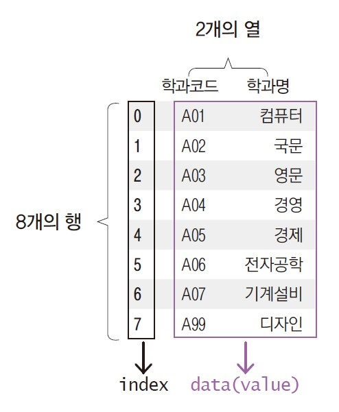
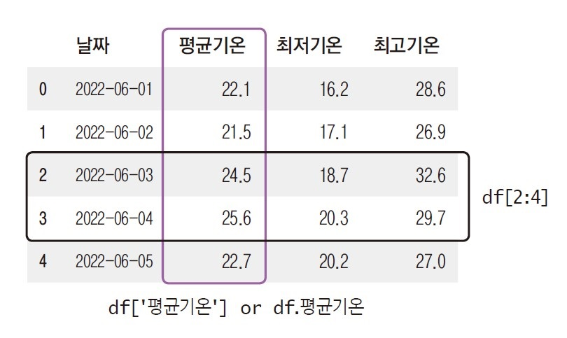

# Pandas 라이브러리 설치
#!pip install pandas
- Pandas
4.1. 데이터프레임
- Pandas 라이브러리
- NumPy 라이브러리를 기반으로 개발된 Python 데이터 분석 라이브러리
- 다양한 형태의 데이터를 효율적으로 처리하고 탐색할 수 있음
- 필터링, 정렬, 그룹화, 집계, 결측치 처리 등 다양한 분석 기능 제공
- 시리즈(Series)
- 1차원 데이터를 다루는 자료구조
- 리스트와 달리 각 데이터에 인덱스를 지정할 수 있음
- 데이터프레임(DataFrame)
- 2차원 데이터를 다루는 자료구조
- 행(row)과 열(column)로 이루어진 표(table) 형태의 구조를 가짐
- 행(row) : 각 개별 데이터를 표현하며, 케이스(case)라고도 함
- 열(column) : 속성을 표현하며, 변수(variable)라고도 함
- 인덱스(index) : 각 개별 데이터를 특정할 수 있는 고유의 값으로, 행을 구분함
- 열 단위로 서로 다른 자료형을 저장할 수 있으며, 각 열에는 동일한 자료형만 포함되어야 함

4.2. 데이터프레임 생성
- 데이터프레임 생성
- Pandas 라이브러리의
DataFrame()함수- 데이터를 직접 입력하는 방법으로, 일반적으로 딕셔너리를 많이 사용함
- 키(key) : 열 이름
- 값(value) : 각 열의 데이터
- 데이터를 직접 입력하는 방법으로, 일반적으로 딕셔너리를 많이 사용함
- Pandas 라이브러리의
read_csv()함수- 외부에 있는 csv 파일을 읽어 데이터프레임으로 생성함
- 한글이 포함된 경우
encoding='euc-kr'또는encoding='cp949'옵션을 지정해야 함 - [실습파일] exam.csv, music.csv, weather.csv, train.csv
- Pandas 라이브러리의
# Pandas 라이브러리 불러오기
import pandas as pd# 데이터프레임 생성1
df = pd.DataFrame({
'name': ['Jang', 'Yang', 'Oh'],
'dept': ['computer', 'english', 'math'],
'score': [100, 90, 50]})
df| name | dept | score | |
|---|---|---|---|
| 0 | Jang | computer | 100 |
| 1 | Yang | english | 90 |
| 2 | Oh | math | 50 |
# 데이터프레임 생성2
df = pd.read_csv('./data/exam.csv')
df| id | nclass | math | english | science | |
|---|---|---|---|---|---|
| 0 | 1 | 1 | 50 | 98 | 50 |
| 1 | 2 | 1 | 60 | 97 | 60 |
| 2 | 3 | 1 | 45 | 86 | 78 |
| 3 | 4 | 1 | 30 | 98 | 58 |
| 4 | 5 | 2 | 25 | 80 | 65 |
| 5 | 6 | 2 | 50 | 89 | 98 |
| 6 | 7 | 2 | 80 | 90 | 45 |
| 7 | 8 | 2 | 90 | 78 | 25 |
| 8 | 9 | 3 | 20 | 98 | 15 |
| 9 | 10 | 3 | 50 | 98 | 45 |
| 10 | 11 | 3 | 65 | 65 | 65 |
| 11 | 12 | 3 | 45 | 85 | 32 |
| 12 | 13 | 4 | 46 | 98 | 65 |
| 13 | 14 | 4 | 48 | 87 | 12 |
| 14 | 15 | 4 | 75 | 56 | 78 |
| 15 | 16 | 4 | 58 | 98 | 65 |
| 16 | 17 | 5 | 65 | 68 | 98 |
| 17 | 18 | 5 | 80 | 78 | 90 |
| 18 | 19 | 5 | 89 | 68 | 87 |
| 19 | 20 | 5 | 78 | 83 | 58 |
4.3. 데이터프레임 확인
- 데이터 분석 시 가장 먼저 데이터의 전반적인 구조를 파악해야 함
# 데이터 불러오기
df = pd.read_csv("./data/music.csv")
df| title | singer | personnel | sortation | release_date | agency | genre | type | |
|---|---|---|---|---|---|---|---|---|
| 0 | 좋은날 | 아이유 | 1 | 솔로 | 2010-12-09 | 카카오엔터테인먼트 | 발라드 | EP |
| 1 | 내가제일잘나가 | 2NE1 | 4 | 그룹 | 2011-06-24 | YG엔터테인먼트 | 댄스 | 싱글 |
| 2 | 강남스타일 | 싸이 | 1 | 솔로 | 2012-07-15 | YG엔터테인먼트 | 힙합 | 정규 |
| 3 | 첫사랑니 | f(x) | 5 | 그룹 | 2013-07-29 | SM엔터테인먼트 | 댄스 | 정규 |
| 4 | 위아래 | EXID | 4 | 그룹 | 2014-08-27 | 바나나컬쳐 | 댄스 | 싱글 |
| 5 | Ah-Choo | 러블리즈 | 8 | 그룹 | 2015-10-01 | 울림엔터테인먼트 | 댄스 | EP |
| 6 | 피땀눈물 | 방탄소년단 | 7 | 그룹 | 2016-10-10 | 빅히트뮤직 | R&B | 정규 |
| 7 | 시간을달려서 | 여자친구 | 6 | 그룹 | 2016-01-25 | 쏘스뮤직 | 댄스 | EP |
| 8 | 빨간맛 | 레드벨벳 | 5 | 그룹 | 2017-07-09 | SM엔터테인먼트 | 댄스 | EP |
| 9 | 에너제틱 | 워너원 | 11 | 그룹 | 2017-08-07 | YMC엔터테인먼트, 스톤뮤직엔터테인먼트 | 댄스 | EP |
| 10 | 뚜두뚜두 | 블랙핑크 | 4 | 그룹 | 2018-06-15 | YG엔터테인먼트 | 댄스 | EP |
| 11 | 달라달라 | 있지 | 5 | 그룹 | 2019-02-12 | JYP엔터테인먼트 | 댄스 | 싱글 |
| 12 | Dynamite | 방탄소년단 | 7 | 그룹 | 2020-08-21 | 빅히트뮤직 | 댄스 | 싱글 |
# 변수 속성
df.info()<class 'pandas.core.frame.DataFrame'>
RangeIndex: 13 entries, 0 to 12
Data columns (total 8 columns):
# Column Non-Null Count Dtype
--- ------ -------------- -----
0 title 13 non-null object
1 singer 13 non-null object
2 personnel 13 non-null int64
3 sortation 13 non-null object
4 release_date 13 non-null object
5 agency 13 non-null object
6 genre 13 non-null object
7 type 13 non-null object
dtypes: int64(1), object(7)
memory usage: 964.0+ bytes# 데이터 앞부분/뒷부분
df.head()
# df.tail()| title | singer | personnel | sortation | release_date | agency | genre | type | |
|---|---|---|---|---|---|---|---|---|
| 0 | 좋은날 | 아이유 | 1 | 솔로 | 2010-12-09 | 카카오엔터테인먼트 | 발라드 | EP |
| 1 | 내가제일잘나가 | 2NE1 | 4 | 그룹 | 2011-06-24 | YG엔터테인먼트 | 댄스 | 싱글 |
| 2 | 강남스타일 | 싸이 | 1 | 솔로 | 2012-07-15 | YG엔터테인먼트 | 힙합 | 정규 |
| 3 | 첫사랑니 | f(x) | 5 | 그룹 | 2013-07-29 | SM엔터테인먼트 | 댄스 | 정규 |
| 4 | 위아래 | EXID | 4 | 그룹 | 2014-08-27 | 바나나컬쳐 | 댄스 | 싱글 |
# 요약 통계량 : 수치형 변수
df.describe()| personnel | |
|---|---|
| count | 13.000000 |
| mean | 5.230769 |
| std | 2.712743 |
| min | 1.000000 |
| 25% | 4.000000 |
| 50% | 5.000000 |
| 75% | 7.000000 |
| max | 11.000000 |
# 요약 통계량 : 문자형 변수
df.describe(include='object')| title | singer | sortation | release_date | agency | genre | type | |
|---|---|---|---|---|---|---|---|
| count | 13 | 13 | 13 | 13 | 13 | 13 | 13 |
| unique | 13 | 12 | 2 | 13 | 9 | 4 | 3 |
| top | 좋은날 | 방탄소년단 | 그룹 | 2010-12-09 | YG엔터테인먼트 | 댄스 | EP |
| freq | 1 | 2 | 11 | 1 | 3 | 10 | 6 |
# 인덱스
df.indexRangeIndex(start=0, stop=13, step=1)# 열
df.columnsIndex(['title', 'singer', 'personnel', 'sortation', 'release_date', 'agency',
'genre', 'type'],
dtype='object')# 각 열의 자료형
df.dtypestitle object
singer object
personnel int64
sortation object
release_date object
agency object
genre object
type object
dtype: object# 정렬 : 오름차순(기본)
df.sort_values('release_date')| title | singer | personnel | sortation | release_date | agency | genre | type | |
|---|---|---|---|---|---|---|---|---|
| 0 | 좋은날 | 아이유 | 1 | 솔로 | 2010-12-09 | 카카오엔터테인먼트 | 발라드 | EP |
| 1 | 내가제일잘나가 | 2NE1 | 4 | 그룹 | 2011-06-24 | YG엔터테인먼트 | 댄스 | 싱글 |
| 2 | 강남스타일 | 싸이 | 1 | 솔로 | 2012-07-15 | YG엔터테인먼트 | 힙합 | 정규 |
| 3 | 첫사랑니 | f(x) | 5 | 그룹 | 2013-07-29 | SM엔터테인먼트 | 댄스 | 정규 |
| 4 | 위아래 | EXID | 4 | 그룹 | 2014-08-27 | 바나나컬쳐 | 댄스 | 싱글 |
| 5 | Ah-Choo | 러블리즈 | 8 | 그룹 | 2015-10-01 | 울림엔터테인먼트 | 댄스 | EP |
| 7 | 시간을달려서 | 여자친구 | 6 | 그룹 | 2016-01-25 | 쏘스뮤직 | 댄스 | EP |
| 6 | 피땀눈물 | 방탄소년단 | 7 | 그룹 | 2016-10-10 | 빅히트뮤직 | R&B | 정규 |
| 8 | 빨간맛 | 레드벨벳 | 5 | 그룹 | 2017-07-09 | SM엔터테인먼트 | 댄스 | EP |
| 9 | 에너제틱 | 워너원 | 11 | 그룹 | 2017-08-07 | YMC엔터테인먼트, 스톤뮤직엔터테인먼트 | 댄스 | EP |
| 10 | 뚜두뚜두 | 블랙핑크 | 4 | 그룹 | 2018-06-15 | YG엔터테인먼트 | 댄스 | EP |
| 11 | 달라달라 | 있지 | 5 | 그룹 | 2019-02-12 | JYP엔터테인먼트 | 댄스 | 싱글 |
| 12 | Dynamite | 방탄소년단 | 7 | 그룹 | 2020-08-21 | 빅히트뮤직 | 댄스 | 싱글 |
# 빈도
cnt = df['agency'].value_counts()
pd.DataFrame(cnt)| count | |
|---|---|
| agency | |
| YG엔터테인먼트 | 3 |
| SM엔터테인먼트 | 2 |
| 빅히트뮤직 | 2 |
| 카카오엔터테인먼트 | 1 |
| 바나나컬쳐 | 1 |
| 울림엔터테인먼트 | 1 |
| 쏘스뮤직 | 1 |
| YMC엔터테인먼트, 스톤뮤직엔터테인먼트 | 1 |
| JYP엔터테인먼트 | 1 |
# 고유값
df['agency'].unique()array(['카카오엔터테인먼트', 'YG엔터테인먼트', 'SM엔터테인먼트', '바나나컬쳐', '울림엔터테인먼트', '빅히트뮤직',
'쏘스뮤직', 'YMC엔터테인먼트, 스톤뮤직엔터테인먼트', 'JYP엔터테인먼트'], dtype=object)4.4. 데이터프레임 선택

4.4.1. 열 선택
- 데이터프레임에서 특정 열을 선택할 때는
[]안에 열 이름을 문자열로 입력함- 여러 개의 열을 선택하는 경우, 열 이름을 리스트로 전달함
- 하나의 열만 선택하는 경우,
(데이터프레임 이름).(열 이름)형식으로도 접근할 수 있음
# 열 선택1
df = pd.read_csv('./data/weather.csv', encoding='cp949')
df['평균기온']0 22.1
1 21.5
2 24.5
3 25.6
4 22.7
5 19.7
6 20.6
7 21.2
8 20.9
9 20.9
10 24.6
11 24.6
12 23.6
13 21.5
14 17.5
15 20.3
16 22.5
17 23.3
18 23.4
19 25.2
20 26.5
21 25.9
22 24.3
23 22.6
24 26.0
25 26.5
26 26.8
27 26.9
28 25.1
29 22.3
Name: 평균기온, dtype: float64# 열 선택2
df[['최저기온', '최고기온']]| 최저기온 | 최고기온 | |
|---|---|---|
| 0 | 16.2 | 28.6 |
| 1 | 17.1 | 26.9 |
| 2 | 18.7 | 32.6 |
| 3 | 20.3 | 29.7 |
| 4 | 20.2 | 27.0 |
| 5 | 16.7 | 24.5 |
| 6 | 15.1 | 25.1 |
| 7 | 16.2 | 25.8 |
| 8 | 18.5 | 24.5 |
| 9 | 17.2 | 26.6 |
| 10 | 17.7 | 32.7 |
| 11 | 18.9 | 31.5 |
| 12 | 19.6 | 29.2 |
| 13 | 17.7 | 27.1 |
| 14 | 14.9 | 20.1 |
| 15 | 17.6 | 24.8 |
| 16 | 16.5 | 28.1 |
| 17 | 22.0 | 25.1 |
| 18 | 22.3 | 25.1 |
| 19 | 22.0 | 29.0 |
| 20 | 21.2 | 32.6 |
| 21 | 21.9 | 31.0 |
| 22 | 23.3 | 26.4 |
| 23 | 20.6 | 24.9 |
| 24 | 21.5 | 30.5 |
| 25 | 24.8 | 28.1 |
| 26 | 25.4 | 28.1 |
| 27 | 25.7 | 27.9 |
| 28 | 24.4 | 26.1 |
| 29 | 21.2 | 24.5 |
4.4.2. 레이블이나 조건 표현으로 선택
- 레이블(label)을 기반으로 행과 열을 선택할 때
loc[]속성을 사용함- 열 이름을 이용하여 특정 열을 선택할 수 있음
- 인덱스를 이용하여 특정 행을 선택할 수 있음
- 조건식을 사용하여 특정 조건을 만족하는 행을 선택할 수 있음
- 조건이 2개 이상인 경우, 각 조건을
()로 묶고 논리 연산자(&,|,~)를 사용함
- 조건이 2개 이상인 경우, 각 조건을
# 열 선택3
df.loc[:, ['날짜', '최고기온']]| 날짜 | 최고기온 | |
|---|---|---|
| 0 | 2022-06-01 | 28.6 |
| 1 | 2022-06-02 | 26.9 |
| 2 | 2022-06-03 | 32.6 |
| 3 | 2022-06-04 | 29.7 |
| 4 | 2022-06-05 | 27.0 |
| 5 | 2022-06-06 | 24.5 |
| 6 | 2022-06-07 | 25.1 |
| 7 | 2022-06-08 | 25.8 |
| 8 | 2022-06-09 | 24.5 |
| 9 | 2022-06-10 | 26.6 |
| 10 | 2022-06-11 | 32.7 |
| 11 | 2022-06-12 | 31.5 |
| 12 | 2022-06-13 | 29.2 |
| 13 | 2022-06-14 | 27.1 |
| 14 | 2022-06-15 | 20.1 |
| 15 | 2022-06-16 | 24.8 |
| 16 | 2022-06-17 | 28.1 |
| 17 | 2022-06-18 | 25.1 |
| 18 | 2022-06-19 | 25.1 |
| 19 | 2022-06-20 | 29.0 |
| 20 | 2022-06-21 | 32.6 |
| 21 | 2022-06-22 | 31.0 |
| 22 | 2022-06-23 | 26.4 |
| 23 | 2022-06-24 | 24.9 |
| 24 | 2022-06-25 | 30.5 |
| 25 | 2022-06-26 | 28.1 |
| 26 | 2022-06-27 | 28.1 |
| 27 | 2022-06-28 | 27.9 |
| 28 | 2022-06-29 | 26.1 |
| 29 | 2022-06-30 | 24.5 |
# 행 선택1
df.loc[0:3]| 날짜 | 평균기온 | 최저기온 | 최고기온 | |
|---|---|---|---|---|
| 0 | 2022-06-01 | 22.1 | 16.2 | 28.6 |
| 1 | 2022-06-02 | 21.5 | 17.1 | 26.9 |
| 2 | 2022-06-03 | 24.5 | 18.7 | 32.6 |
| 3 | 2022-06-04 | 25.6 | 20.3 | 29.7 |
# 행 선택2 : 날짜 데이터를 인덱스로 지정 후, 특정 날짜에 해당하는 행 선택
df.index = df['날짜']
df.loc['2022-06-05']날짜 2022-06-05
평균기온 22.7
최저기온 20.2
최고기온 27.0
Name: 2022-06-05, dtype: object# 헹 선택3 : 조건을 만족하는 행 선택
mask = df['평균기온']>=25
df.loc[mask]| 날짜 | 평균기온 | 최저기온 | 최고기온 | |
|---|---|---|---|---|
| 날짜 | ||||
| 2022-06-04 | 2022-06-04 | 25.6 | 20.3 | 29.7 |
| 2022-06-20 | 2022-06-20 | 25.2 | 22.0 | 29.0 |
| 2022-06-21 | 2022-06-21 | 26.5 | 21.2 | 32.6 |
| 2022-06-22 | 2022-06-22 | 25.9 | 21.9 | 31.0 |
| 2022-06-25 | 2022-06-25 | 26.0 | 21.5 | 30.5 |
| 2022-06-26 | 2022-06-26 | 26.5 | 24.8 | 28.1 |
| 2022-06-27 | 2022-06-27 | 26.8 | 25.4 | 28.1 |
| 2022-06-28 | 2022-06-28 | 26.9 | 25.7 | 27.9 |
| 2022-06-29 | 2022-06-29 | 25.1 | 24.4 | 26.1 |
4.4.3. 부울 인덱싱
- 조건식을 사용하면 각 행이 조건을 만족하는지 여부를
True또는False로 반환함 - 그 결과인 부울(boolean)형 시리즈를
[]에 전달하면True에 해당하는 행만 선택할 수 있음 - 조건이 2개 이상인 경우, 각 조건을
()로 묶고 논리 연산자(&,|,~)를 사용함
# 부울 인덱싱1 : 조건을 만족하는 행 선택
mask = df['최고기온']>=30
df[mask]| 날짜 | 평균기온 | 최저기온 | 최고기온 | |
|---|---|---|---|---|
| 날짜 | ||||
| 2022-06-03 | 2022-06-03 | 24.5 | 18.7 | 32.6 |
| 2022-06-11 | 2022-06-11 | 24.6 | 17.7 | 32.7 |
| 2022-06-12 | 2022-06-12 | 24.6 | 18.9 | 31.5 |
| 2022-06-21 | 2022-06-21 | 26.5 | 21.2 | 32.6 |
| 2022-06-22 | 2022-06-22 | 25.9 | 21.9 | 31.0 |
| 2022-06-25 | 2022-06-25 | 26.0 | 21.5 | 30.5 |
# 부울 인덱싱2 : 조건을 만족하는 행과 특정 열 선택
mask = df['최고기온']>=30
df[mask][['최저기온', '최고기온']]| 최저기온 | 최고기온 | |
|---|---|---|
| 날짜 | ||
| 2022-06-03 | 18.7 | 32.6 |
| 2022-06-11 | 17.7 | 32.7 |
| 2022-06-12 | 18.9 | 31.5 |
| 2022-06-21 | 21.2 | 32.6 |
| 2022-06-22 | 21.9 | 31.0 |
| 2022-06-25 | 21.5 | 30.5 |
# 불 인덱싱3 : 제일 더웠던 날 선택
mask = df['최고기온']==df['최고기온'].max()
df[mask]| 날짜 | 평균기온 | 최저기온 | 최고기온 | |
|---|---|---|---|---|
| 날짜 | ||||
| 2022-06-11 | 2022-06-11 | 24.6 | 17.7 | 32.7 |
# [Note] 특정 조건을 만족하는 데이터 선택
df.query('최고기온-최저기온>=10')| 날짜 | 평균기온 | 최저기온 | 최고기온 | |
|---|---|---|---|---|
| 날짜 | ||||
| 2022-06-01 | 2022-06-01 | 22.1 | 16.2 | 28.6 |
| 2022-06-03 | 2022-06-03 | 24.5 | 18.7 | 32.6 |
| 2022-06-07 | 2022-06-07 | 20.6 | 15.1 | 25.1 |
| 2022-06-11 | 2022-06-11 | 24.6 | 17.7 | 32.7 |
| 2022-06-12 | 2022-06-12 | 24.6 | 18.9 | 31.5 |
| 2022-06-17 | 2022-06-17 | 22.5 | 16.5 | 28.1 |
| 2022-06-21 | 2022-06-21 | 26.5 | 21.2 | 32.6 |
4.5. 데이터 가공 및 그룹핑
4.5.1. 데이터 가공
drop()메소드를 이용하여 특정 행 또는 열을 삭제할 수 있음- 행 삭제(axis=0) : index 인자에 삭제할 행에 대한 인덱스를 지정함
- 특정 조건을 만족하는 행의 위치에 대한 인덱스를 추출하려면
index속성을 이용함
- 특정 조건을 만족하는 행의 위치에 대한 인덱스를 추출하려면
- 열 삭제(axis=1) : columns 인자에 삭제할 열 이름을 리스트 형태로 지정함
- 원본 데이터를 직접 수정하려면
inplace=True옵션을 지정함
- 행 삭제(axis=0) : index 인자에 삭제할 행에 대한 인덱스를 지정함
# 데이터 불러오기
df = pd.read_csv("./data/music.csv")
df| title | singer | personnel | sortation | release_date | agency | genre | type | |
|---|---|---|---|---|---|---|---|---|
| 0 | 좋은날 | 아이유 | 1 | 솔로 | 2010-12-09 | 카카오엔터테인먼트 | 발라드 | EP |
| 1 | 내가제일잘나가 | 2NE1 | 4 | 그룹 | 2011-06-24 | YG엔터테인먼트 | 댄스 | 싱글 |
| 2 | 강남스타일 | 싸이 | 1 | 솔로 | 2012-07-15 | YG엔터테인먼트 | 힙합 | 정규 |
| 3 | 첫사랑니 | f(x) | 5 | 그룹 | 2013-07-29 | SM엔터테인먼트 | 댄스 | 정규 |
| 4 | 위아래 | EXID | 4 | 그룹 | 2014-08-27 | 바나나컬쳐 | 댄스 | 싱글 |
| 5 | Ah-Choo | 러블리즈 | 8 | 그룹 | 2015-10-01 | 울림엔터테인먼트 | 댄스 | EP |
| 6 | 피땀눈물 | 방탄소년단 | 7 | 그룹 | 2016-10-10 | 빅히트뮤직 | R&B | 정규 |
| 7 | 시간을달려서 | 여자친구 | 6 | 그룹 | 2016-01-25 | 쏘스뮤직 | 댄스 | EP |
| 8 | 빨간맛 | 레드벨벳 | 5 | 그룹 | 2017-07-09 | SM엔터테인먼트 | 댄스 | EP |
| 9 | 에너제틱 | 워너원 | 11 | 그룹 | 2017-08-07 | YMC엔터테인먼트, 스톤뮤직엔터테인먼트 | 댄스 | EP |
| 10 | 뚜두뚜두 | 블랙핑크 | 4 | 그룹 | 2018-06-15 | YG엔터테인먼트 | 댄스 | EP |
| 11 | 달라달라 | 있지 | 5 | 그룹 | 2019-02-12 | JYP엔터테인먼트 | 댄스 | 싱글 |
| 12 | Dynamite | 방탄소년단 | 7 | 그룹 | 2020-08-21 | 빅히트뮤직 | 댄스 | 싱글 |
# 여러 개의 열 삭제
df.drop(columns = ['sortation', 'agency'], inplace=True)
df.columnsIndex(['title', 'singer', 'personnel', 'release_date', 'genre', 'type'], dtype='object')# 열 이름 변경
df.columns = ['노래제목', '가수', '인원수', '발매일', '장르', '유형']
df.head()| 노래제목 | 가수 | 인원수 | 발매일 | 장르 | 유형 | |
|---|---|---|---|---|---|---|
| 0 | 좋은날 | 아이유 | 1 | 2010-12-09 | 발라드 | EP |
| 1 | 내가제일잘나가 | 2NE1 | 4 | 2011-06-24 | 댄스 | 싱글 |
| 2 | 강남스타일 | 싸이 | 1 | 2012-07-15 | 힙합 | 정규 |
| 3 | 첫사랑니 | f(x) | 5 | 2013-07-29 | 댄스 | 정규 |
| 4 | 위아래 | EXID | 4 | 2014-08-27 | 댄스 | 싱글 |
# 발매일 변수를 datetime 형식으로 변환
df['발매일'] = pd.to_datetime(df['발매일'])
df.dtypes노래제목 object
가수 object
인원수 int64
발매일 datetime64[ns]
장르 object
유형 object
dtype: object# 새로운 열 생성
df['연도'] = df['발매일'].dt.year
df['월'] = df['발매일'].dt.month
df['일'] = df['발매일'].dt.day
df.head()| 노래제목 | 가수 | 인원수 | 발매일 | 장르 | 유형 | 연도 | 월 | 일 | |
|---|---|---|---|---|---|---|---|---|---|
| 0 | 좋은날 | 아이유 | 1 | 2010-12-09 | 발라드 | EP | 2010 | 12 | 9 |
| 1 | 내가제일잘나가 | 2NE1 | 4 | 2011-06-24 | 댄스 | 싱글 | 2011 | 6 | 24 |
| 2 | 강남스타일 | 싸이 | 1 | 2012-07-15 | 힙합 | 정규 | 2012 | 7 | 15 |
| 3 | 첫사랑니 | f(x) | 5 | 2013-07-29 | 댄스 | 정규 | 2013 | 7 | 29 |
| 4 | 위아래 | EXID | 4 | 2014-08-27 | 댄스 | 싱글 | 2014 | 8 | 27 |
4.5.2. 데이터 그룹핑
groupby()메소드를 이용하여 특정 열을 기준으로 데이터를 그룹화할 수 있음- 통계량을 산출하는 메소드
mean(),std(),var(),max(),min(),mode()등과 함께 사용됨
# 데이터 그룹핑1
newdata = df.groupby(['장르']).count()
pd.DataFrame(newdata['노래제목'])
# df.value_counts('장르')| 노래제목 | |
|---|---|
| 장르 | |
| R&B | 1 |
| 댄스 | 10 |
| 발라드 | 1 |
| 힙합 | 1 |
# 데이터 그룹핑2
newdata = df.groupby(['장르'])['인원수'].mean()
pd.DataFrame(newdata)| 인원수 | |
|---|---|
| 장르 | |
| R&B | 7.0 |
| 댄스 | 5.9 |
| 발라드 | 1.0 |
| 힙합 | 1.0 |
4.6. 결측 데이터 처리
- 결측 데이터(missing value)
- Pandas는 누락된 데이터를
NaN(Not a Number)로 표기하며, 연산 시 자동으로 제외됨 isna(),isnull()메소드를 이용하면 결측값을 확인할 수 있음
- Pandas는 누락된 데이터를
- 결측 데이터 처리
- 가장 간단한 방법은
dropna()메소드를 이용하여 결측값이 포함된 행이나 열을 삭제하는 것임axis=0이면 행,axis=1이면 열을 삭제함
fillna()메소드를 이용하여 결측값을 최빈값이나 평균, 중앙값으로 대체할 수도 있음
- 가장 간단한 방법은
# 데이터 불러오기
df = pd.read_csv("./data/train.csv")
df| PassengerId | Survived | Pclass | Name | Sex | Age | SibSp | Parch | Ticket | Fare | Cabin | Embarked | |
|---|---|---|---|---|---|---|---|---|---|---|---|---|
| 0 | 1 | 0 | 3 | Braund, Mr. Owen Harris | male | 22.0 | 1 | 0 | A/5 21171 | 7.2500 | NaN | S |
| 1 | 2 | 1 | 1 | Cumings, Mrs. John Bradley (Florence Briggs Th... | female | 38.0 | 1 | 0 | PC 17599 | 71.2833 | C85 | C |
| 2 | 3 | 1 | 3 | Heikkinen, Miss. Laina | female | 26.0 | 0 | 0 | STON/O2. 3101282 | 7.9250 | NaN | S |
| 3 | 4 | 1 | 1 | Futrelle, Mrs. Jacques Heath (Lily May Peel) | female | 35.0 | 1 | 0 | 113803 | 53.1000 | C123 | S |
| 4 | 5 | 0 | 3 | Allen, Mr. William Henry | male | 35.0 | 0 | 0 | 373450 | 8.0500 | NaN | S |
| ... | ... | ... | ... | ... | ... | ... | ... | ... | ... | ... | ... | ... |
| 886 | 887 | 0 | 2 | Montvila, Rev. Juozas | male | 27.0 | 0 | 0 | 211536 | 13.0000 | NaN | S |
| 887 | 888 | 1 | 1 | Graham, Miss. Margaret Edith | female | 19.0 | 0 | 0 | 112053 | 30.0000 | B42 | S |
| 888 | 889 | 0 | 3 | Johnston, Miss. Catherine Helen "Carrie" | female | NaN | 1 | 2 | W./C. 6607 | 23.4500 | NaN | S |
| 889 | 890 | 1 | 1 | Behr, Mr. Karl Howell | male | 26.0 | 0 | 0 | 111369 | 30.0000 | C148 | C |
| 890 | 891 | 0 | 3 | Dooley, Mr. Patrick | male | 32.0 | 0 | 0 | 370376 | 7.7500 | NaN | Q |
891 rows × 12 columns
# 결측값 확인
df[df['Embarked'].isna()]| PassengerId | Survived | Pclass | Name | Sex | Age | SibSp | Parch | Ticket | Fare | Cabin | Embarked | |
|---|---|---|---|---|---|---|---|---|---|---|---|---|
| 61 | 62 | 1 | 1 | Icard, Miss. Amelie | female | 38.0 | 0 | 0 | 113572 | 80.0 | B28 | NaN |
| 829 | 830 | 1 | 1 | Stone, Mrs. George Nelson (Martha Evelyn) | female | 62.0 | 0 | 0 | 113572 | 80.0 | B28 | NaN |
# 각 열별 결측값 개수 확인
# 부울형은 산술 연산 시 True는 1, False는 0으로 계산되므로
# isna() 결과에 sum()을 적용하면 결측값 개수가 계산됨
df.isna().sum()PassengerId 0
Survived 0
Pclass 0
Name 0
Sex 0
Age 177
SibSp 0
Parch 0
Ticket 0
Fare 0
Cabin 687
Embarked 2
dtype: int64# 결측값이 포함된 열 삭제
df.drop('Cabin', axis=1, inplace=True)
df.columnsIndex(['PassengerId', 'Survived', 'Pclass', 'Name', 'Sex', 'Age', 'SibSp',
'Parch', 'Ticket', 'Fare', 'Embarked'],
dtype='object')# 결측값이 포함된 행 삭제
df.dropna(axis=0)| PassengerId | Survived | Pclass | Name | Sex | Age | SibSp | Parch | Ticket | Fare | Embarked | |
|---|---|---|---|---|---|---|---|---|---|---|---|
| 0 | 1 | 0 | 3 | Braund, Mr. Owen Harris | male | 22.0 | 1 | 0 | A/5 21171 | 7.2500 | S |
| 1 | 2 | 1 | 1 | Cumings, Mrs. John Bradley (Florence Briggs Th... | female | 38.0 | 1 | 0 | PC 17599 | 71.2833 | C |
| 2 | 3 | 1 | 3 | Heikkinen, Miss. Laina | female | 26.0 | 0 | 0 | STON/O2. 3101282 | 7.9250 | S |
| 3 | 4 | 1 | 1 | Futrelle, Mrs. Jacques Heath (Lily May Peel) | female | 35.0 | 1 | 0 | 113803 | 53.1000 | S |
| 4 | 5 | 0 | 3 | Allen, Mr. William Henry | male | 35.0 | 0 | 0 | 373450 | 8.0500 | S |
| ... | ... | ... | ... | ... | ... | ... | ... | ... | ... | ... | ... |
| 885 | 886 | 0 | 3 | Rice, Mrs. William (Margaret Norton) | female | 39.0 | 0 | 5 | 382652 | 29.1250 | Q |
| 886 | 887 | 0 | 2 | Montvila, Rev. Juozas | male | 27.0 | 0 | 0 | 211536 | 13.0000 | S |
| 887 | 888 | 1 | 1 | Graham, Miss. Margaret Edith | female | 19.0 | 0 | 0 | 112053 | 30.0000 | S |
| 889 | 890 | 1 | 1 | Behr, Mr. Karl Howell | male | 26.0 | 0 | 0 | 111369 | 30.0000 | C |
| 890 | 891 | 0 | 3 | Dooley, Mr. Patrick | male | 32.0 | 0 | 0 | 370376 | 7.7500 | Q |
712 rows × 11 columns
# 결측값을 최빈값으로 대체
embarked_mode = df['Embarked'].mode()[0]
df['Embarked'] = df['Embarked'].fillna(embarked_mode)
df.isna().sum()PassengerId 0
Survived 0
Pclass 0
Name 0
Sex 0
Age 177
SibSp 0
Parch 0
Ticket 0
Fare 0
Embarked 0
dtype: int64# 결측값을 평균으로 대체
age_mean = df['Age'].mean()
df['Age'] = df['Age'].fillna(age_mean)
df.isna().sum()PassengerId 0
Survived 0
Pclass 0
Name 0
Sex 0
Age 0
SibSp 0
Parch 0
Ticket 0
Fare 0
Embarked 0
dtype: int64